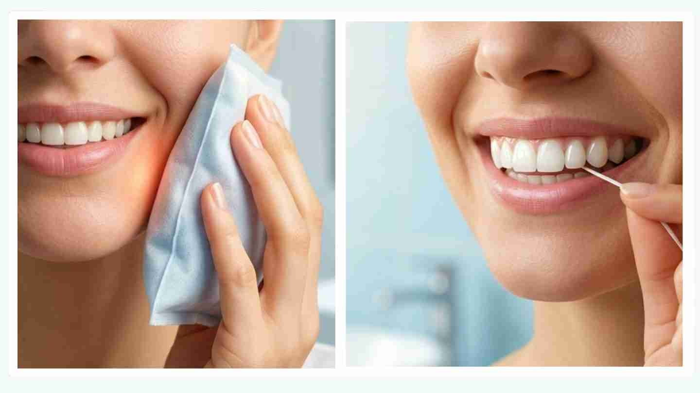

Dental implants are one of the most reliable and long-lasting solutions for replacing missing teeth. While the procedure itself is important, the healing and recovery phase also plays a major role in long-term implant success. Proper aftercare supports healing, helps the implant integrate with the jawbone, and reduces the risk of complications.
Understanding the dental implant healing timeline, expected recovery symptoms, and post-operative care instructions can help patients recover more comfortably and confidently.
Read our complete dental implant guide to learn more about the procedure, benefits, risks, and types of dental implants.Why Aftercare Is Crucial for Implant Success?
After a dental implant is placed, the surrounding bone gradually bonds with the titanium implant through a process called osseointegration. This creates a stable foundation for the replacement tooth.
Proper aftercare can:
- Minimize discomfort and swelling
- Lower the risk of complications
- Support healthy healing
- Improve implant stability and long-term success
Smoking, poor oral hygiene, and ignoring post-operative instructions may increase the risk of implant failure.
Dental Implant Healing Timeline
Every patient heals differently, but most dental implant recoveries follow a similar pattern.Healing speed may vary depending on bone quality, overall health, smoking habits, and oral hygiene practices.
First 24 Hours:
- Mild bleeding or oozing is common
- Swelling may begin around the implant area
- Local anesthesia gradually wears off
- Soft foods and rest are recommended
Days 2–7:
- Swelling and bruising may peak
- Mild discomfort is expected
- Many patients resume routine activities within a few days, depending on the procedure
- The surgical site begins initial healing
Weeks 2–6:
- Gum tissue continues healing around the implant
- Tenderness gradually decreases
- Patients can slowly expand their diet
Months 2–6:
- Osseointegration takes place as the implant fuses with the jawbone
- The implant becomes more stable over time
- Follow-up appointments monitor healing progress
Final Restoration:
- Once healing is complete, the permanent dental crown is placed, restoring function and appearance.
Normal vs Abnormal Symptoms After Implant Surgery
Normal Symptoms: The following symptoms are generally expected after dental implant surgery.
- Mild pain or soreness
- Slight bleeding during the first 24 hours
- Swelling around the gums or cheeks
- Minor bruising
- Temporary chewing discomfort
These symptoms usually improve within a few days.
Abnormal Symptoms: Some symptoms may indicate complications and should not be ignored.
- Severe or worsening pain
- Excessive bleeding
- Persistent swelling beyond one week
- Pus discharge
- Fever
- Loose or moving implant
Contact your dentist immediately if these symptoms occur.
Do's After Dental Implant Surgery
Following proper aftercare instructions can support faster and safer healing.
- Follow Prescribed Medications — Take medications exactly as directed by your dentist.
- Apply Ice Packs — Cold compresses can help reduce swelling during the first 24–48 hours.
- Stay Hydrated — Drink enough water throughout recovery.
- Get Proper Rest — Avoid overexertion and allow your body to heal.
- Attend Follow-Up Visits — Regular check-ups help ensure the implant is healing correctly.
- Maintain Gentle Oral Hygiene — Keeping the mouth clean reduces the risk of infection.

Don’ts After Dental Implant Surgery
Avoiding certain habits is equally important during healing.
- Smoking or Tobacco Use — Smoking can interfere with healing and increase the risk of implant failure.
- Alcohol Consumption — Alcohol may delay recovery and irritate healing tissues.
- Stay Hydrated — Drink enough water throughout recovery.
- Using Straws — Avoid suction to minimize disturbance of the surgical site.
- Vigorous Rinsing or Spitting — Avoid forceful rinsing during the first 24 hours.
- Hard Physical Activity — Heavy exercise may increase bleeding and swelling.
- Chewing Hard Foods — Avoid hard, crunchy, or chewy foods during early healing, as they may irritate the surgical site and affect implant stability.
Foods to Eat and Avoid After Dental Implant Surgery
After dental implant surgery, choosing soft and healing-friendly foods can help reduce discomfort and support recovery. Patients are generally advised to eat soft foods that require minimal chewing during the early healing phase.
Recommended Foods:
- Yogurt
- Mashed potatoes
- Smoothies
- Soups
- Oatmeal
- Scrambled eggs
- Bananas
- Soft rice
Staying hydrated is also important during recovery.
Foods to Avoid:
- Hard or crunchy foods
- Sticky foods
- Spicy foods
- Extremely hot foods
- Chewing directly on the implant site
These foods may irritate the surgical area or create pressure on the healing implant.
Many recovery instructions after oral surgery are similar. Read our tooth extraction aftercare guide for additional healing and recovery tips.
Oral Hygiene & Care During Healing
Maintaining proper oral hygiene during recovery is important for protecting the surgical site and supporting healthy healing around the implant. Gentle cleaning helps reduce bacterial buildup without disturbing the area during the early healing phase.
Recommended Oral Care Tips:
- Use a soft-bristle toothbrush
- Avoid brushing directly over the implant site initially
- Rinse gently with warm salt water after the first 24 hours
- Use prescribed mouthwash if recommended by your dentist
- Keep the surrounding teeth and gums clean throughout recovery
Common Dental Implant Complications
Dental implants have a high success rate, but like any surgical procedure, certain complications can occur during healing or over time if proper care is not maintained.
-
1. Infection
Bacterial infection around the implant site may cause pain, swelling, bad breath, or delayed healing. Maintaining good oral hygiene and following aftercare instructions can help reduce this risk.
-
2. Peri-Implant Mucositis
This is a mild inflammation affecting the gums surrounding the implant. It is usually reversible when treated early with professional cleaning and improved oral care.
-
3. Peri-Implantitis
A more advanced condition where inflammation spreads deeper and causes bone loss around the implant. If left untreated, it may affect implant stability and long-term success.
-
4. Delayed Osseointegration
In some cases, the implant may not bond properly with the jawbone. Smoking, poor bone quality, uncontrolled medical conditions, or excessive pressure on the implant can contribute to delayed healing.
-
5. Nerve Irritation
Although uncommon, nearby nerves may occasionally become irritated during surgery, which can lead to temporary numbness, tingling, or discomfort in the lips, gums, or chin.
Warning Signs of Implant Failure
Contact your dentist promptly if you notice any of the following symptoms after dental implant surgery:
- Persistent pain
- Swelling that worsens over time
- Pus or discharge
- Bad breath or unpleasant taste
- Difficulty chewing
- Persistent bleeding around the implant site
- Loose or moving implant
Early treatment can help prevent more serious complications and improve implant outcomes.
Long-Term Care for Dental Implants
Dental implants require ongoing care to maintain gum health and support long-term stability. Consistent maintenance and regular professional monitoring can help reduce the risk of complications over time.
Long-Term Implant Care Tips:
- Brush and floss daily
- Schedule regular dental check-ups and cleanings
- Wear a nightguard if you grind your teeth
- Avoid biting hard objects such as ice or pens
- Seek early treatment for gum inflammation or discomfort
With proper long-term care, dental implants can remain functional, stable, and natural-looking for many years.
Conclusion
Dental implant recovery requires proper aftercare, good oral hygiene, and regular follow-up visits to support successful healing. While mild discomfort and swelling are common during recovery, recognizing warning signs early and following your dentist’s instructions can help reduce complications and support long-term implant success.
Disclaimer: This blog is for educational purposes and does not replace professional dental consultation.
Frequently Asked Questions (FAQs)
References
- 1.American Academy of Implant Dentistry. (n.d.). What to expect after dental implants.
- 2. American Association of Oral and Maxillofacial Surgeons. (2024). Healing process for dental implants.
- 3. Association of Dental Implantology. (n.d.). Aftercare survival and success.
- 4. Association of Dental Implantology. (n.d.). Aftercare.
- 5. Mayo Clinic. (2024). Dental implant surgery. Mayo Clinic.
Authored By
Dr. R. Manjula
BDS, Fellowship in Endodontics
A dentist and dental health educator with a strong focus on practical, evidence-based dentistry. She values clear communication in clinical care and works towards improving patient awareness, supporting timely decisions that contribute to better long-term oral health outcomes.